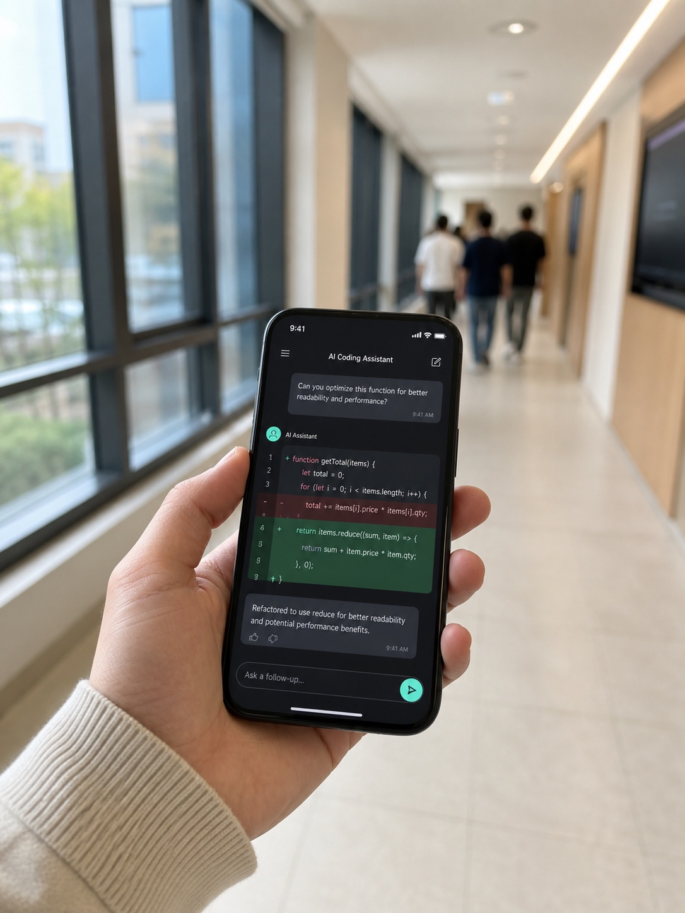
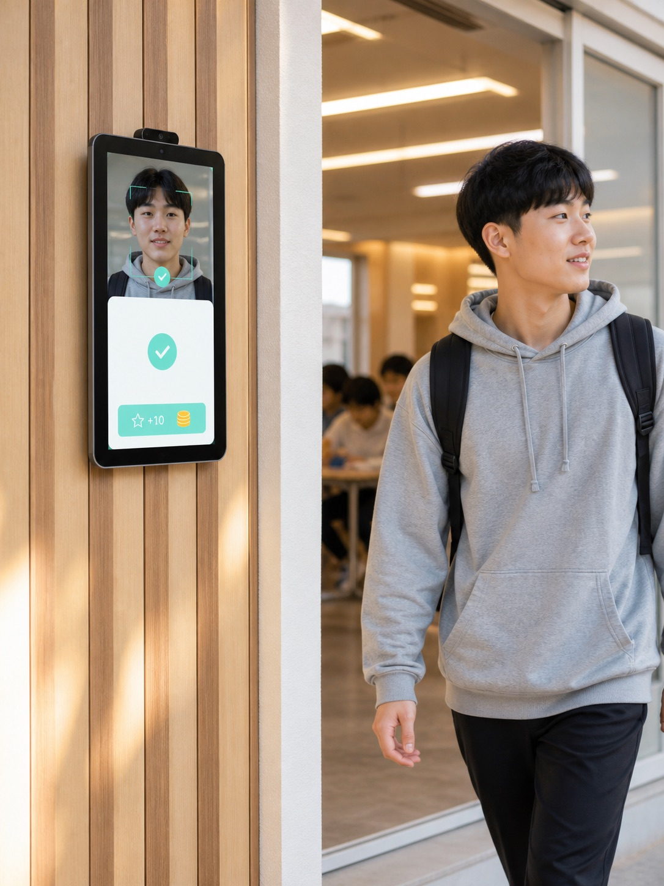
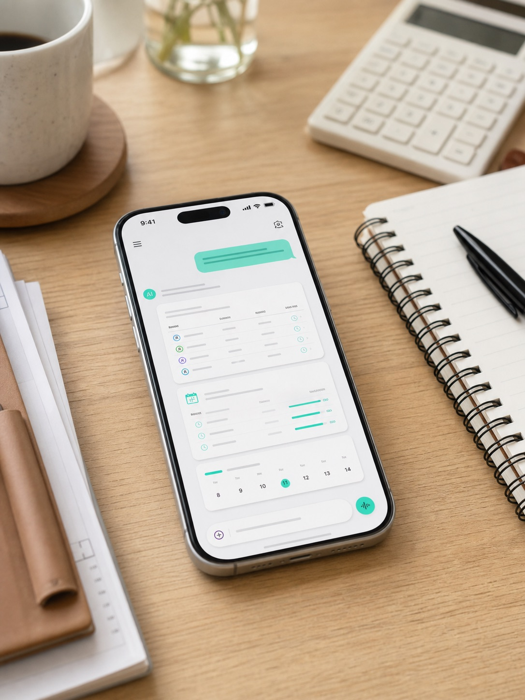
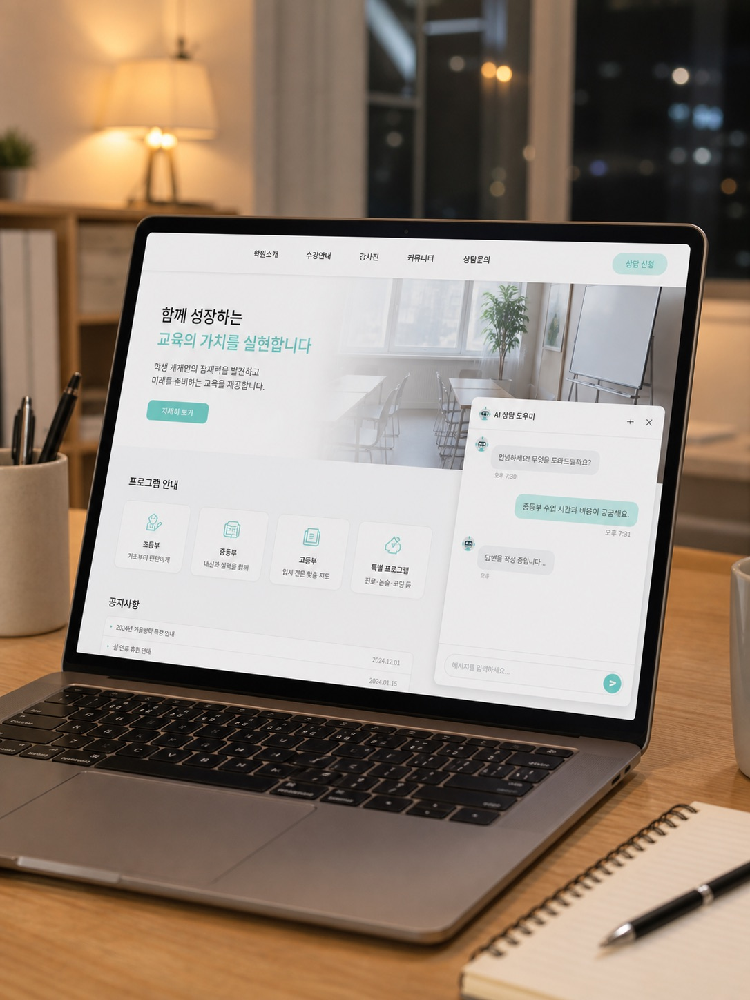
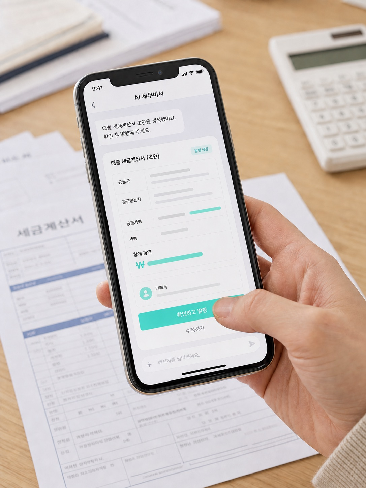
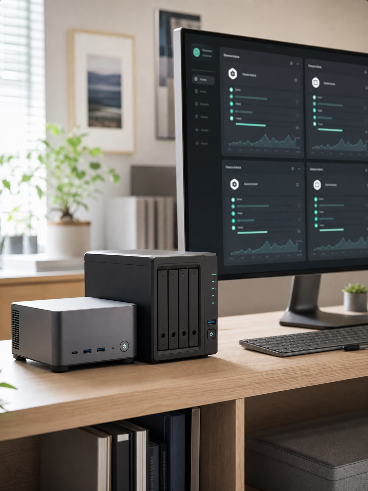

혼자 일하는 사람이 AI로 팀을 만드는 6가지 실전 사례
수업 진행, 학부모 상담, 신규 문의 응대. 돈이 되는 유일한 시간
출결 관리, 시험 접수, 세금계산서, 정산. 안 하면 사고 나는 시간
홈페이지, 콘텐츠, 문의 대응, 시스템 유지보수. 늘 뒤로 밀리는 시간
책상 앞에 앉아야 시작되던 일을, 떠오른 자리에서 바로 시작
출석 호명 · 포인트 적립 · 결석 알림까지 한 번에
수강생별 접수 마감과 응시 자격을 AI가 챙긴다
반복 문의는 24시간 챗봇이, 진짜 상담만 내가
매달 반복되는 발행 업무를 대화 한 줄로
에이전트 4대와 협업 파트너 4명이 한 작업 공간을 공유






새 프로그램을 배우게 만들면 결국 아무도 쓰지 않는다. 이미 매일 열어보는 창을 입구로 삼는다
"누구를 뽑을까"가 아니라 "이 일정을 정리해라"부터. 반복 업무가 첫 번째 후보다
특히 돈과 사람이 걸린 일. AI는 확인만 하면 되는 상태까지 끌어다 놓는 역할
고객 데이터는 밖으로 내보내지 않고, 비용은 사용량이 아니라 장비 한 대로 고정한다
대단한 기술로 시작하지 않았습니다. 이번 주에 세 번 이상 반복한 일 하나,
거기서부터 시작하면 됩니다